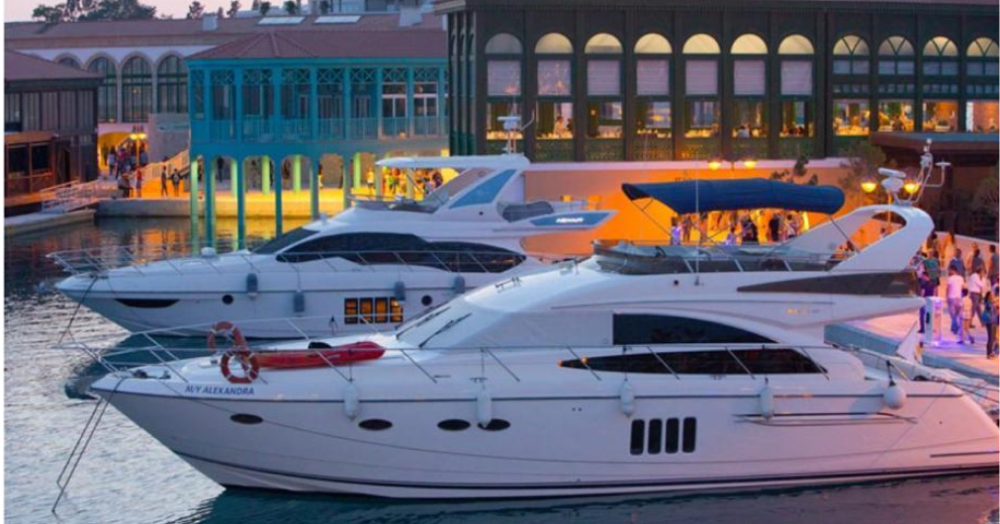

Investment
Opportunities

Investing in Real Estate
Cyprus is becoming a dominant center of interest when it comes to Property Investments in the EU. The stability and successful development of properties around the island has contributed to the financial and business growth of Cyprus.
Property investment means investing in the future and it comes with a huge range of opportunities including:
With thousands of projects completed annually, there has never been a more perfect time to consider property investment in Cyprus. One of the most popular and attractive regions in Cyprus is the southern city of Limassol which has transformed into a business haven and a powerful tourist destination. More and more people from around the globe are choosing to invest in Cyprus’s properties, as it has become one of the most popular and thriving forms of investment. Our team is here to assist you in choosing the optimal investment plan as you consider your personal and financial needs.
Investing in Yachts
One of the perks of living on an island that is sunny all year round, is the access to the harbors and yacht clubs in different parts of the island. There are five harbors in the Republic of Cyprus, with the main ones being located in Larnaca and Limassol. PAM Consulting has partnered with one of the most prestige and renowned Yachting Companies of Cyprus, offering you the chance to experience the island life to the fullest.
Our partner, Blue Point Yachting, was founded on the pillars of professionalism and quality of services. Operating in Cyprus and Lebanon, the company has years of experience in fulfilling the needs of every customer and acts as an official representative and dealer for dominant business brands. While the company’s headquarters are in Larnaca, there is also one office located at the Limassol Marina, enabling them to expand their services and reach a wider audience of customers.
Blue Point Yachting and our team at PAM Consulting have come together to offer you:
- A wide variety of yachts, mega yachts, cruisers, powerboats, and sailing boats are available for you to choose from
- Safety and security of latest-technology equipment and services
- 24-hour Service and Maintenance Technicians
- An efficient and responsible shore-based yacht accounting service
- Assurance of yacht certification compliance, which involves continually monitoring yacht
- ISMs and crew certifications.
- A chance to invest in the luxurious way of living in Cyprus
Whether you’re relocating to Cyprus with your family, your partner, or with the aim to expand your business plans, Yacht investing comes with many advantages and unforgettable experiences. Of course, as safety always comes first, you will also have the opportunity to learn how to operate a ship by taking sailing courses, enabling you to discover the ever-ending crystal-clear waters of Cyprus.
Starting a Business
Have you ever envisioned starting your own business? Being a business owner means being in charge of your own finances and decisions. One of the first steps to consider when building your business is the location of your company. This is the place where you will be investing your time, money, and motivation. For this reason, it is crucial to do your research regarding your target market, local tax implications, and much more.
Cyprus may be a small island, but it offers a huge variety of business opportunities. With a free-market, service-based economy and high household incomes, the country has a stable and modern economy. Millions of international investors have seized the power of business establishment in Cyprus.
These are some of the main reasons to start your own business in Cyprus:
- One of Europe's lowest corporation tax rates
- Many investment opportunities
- The minimum of bureaucracy
- Bilingual qualified workforce
- High quality and low-cost residency
Some of the most thriving businesses on the island include banking and financial consultancy, shipping companies, and there is a high demand for both private and public insurance organizations. These are only a few options when it comes to finding the best business idea for you. Our team is here to provide assistance in discovering the business opportunities found on this beautiful island.
How We Can Help

We listen
You come to us with your goals, and we make sure to understand your needs to the fullest.

We plan
We put all our efforts into creating the perfect investment plan for your family and business.

We recommend
We give you the opportunity to consider a variety of options so you can have a better understanding of investing in Cyprus.

We provide
We offer you our services based on trustworthy agreements with renowned partners in Cyprus.

We support
Once you decide on your investment plan, we remain by your side to make sure everything meets your expectations.